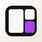

一个窗口。多个智能体。
gexi 是原生 macOS 终端工作区。把每个项目的会话收在一个窗口里，把画布切成窗格，再用 CLI 从外部驱动任何一个窗格。
下面这个窗口是活的：用窗格标题栏里的按钮分屏或关闭。
~/aurora $ git status On branch feat/pricing Changes not staged for commit: modified: src/pricing.ts modified: src/pricing.test.ts no changes added to commit ~/aurora $
~/aurora $ npm test -- pricing PASS src/pricing.test.ts (4) PASS src/checkout.test.ts (2) Test Files 2 passed (2) Tests 6 passed (6) Duration 0.94s
~/aurora $ gh pr list #128 Fix tax rounding feat/pricing checks ok #124 Add invoice PDF feat/invoice ● pending
3 个窗格
~/aurora $ npm run dev VITE v6.2.1 ready in 312 ms Local: http://localhost:5173/ 10:42:18 hmr update /src/pricing.ts
想分就分。
每个窗格都是一个真正的终端，有自己的 shell。向右或向下分，分到够用为止，再用手把窗格挪到想要的位置。
- 把窗格标题拖到另一个窗格的边上，就朝那一侧分；拖到中间，两个窗格对调。
- ⌘⇧↩ 让一个窗格铺满会话；被它挡住的窗格悬浮在右侧，带着透视倾斜和实时终端镜像。点一张卡片，它放大上台，原窗格缩回卡片；窗格多到放不下时互相叠放。再按一次，全部回来。
- 右侧的文件抽屉列出项目的改动和文件：改动页打开 diff，文件页浏览目录树并就地读文件。标题栏的分支按钮或 ⌘⇧E 都能打开它，每个文件按类型带图标。
- 舒适卡片或无缝终端，浅色或深色。macOS 26 上窗口、侧栏和窗格共用一块液态玻璃，设置里可以关掉，换回平面样式。
~/aurora $ git diff --stat src/pricing.ts +4 −2 src/pricing.test.ts +2 −3 2 files changed, 6 insertions(+), 5 deletions(−) ~/aurora $
~/aurora $ npm test 6 tests passed Duration 0.94s
~/ledger $ go test ./... ok example.com/ledger 0.41s
~/site $ npm run build vite building for production... built in 1.28s
是项目，不是标签页。
会话按所在文件夹分组，关掉窗口也会继续跑。点 Dock 图标就把工作区叫回来；⌘Q 才是真的退出。
退出时布局会保存，下次启动在每个新 shell 之上重绘上次的屏幕。agent 窗格会在自己的目录里恢复最近的会话：Claude Code 用 --resume，Codex 用 codex resume --last，omp、Devin 和 Grok 用 --continue，Droid 用 --resume --last，Perch 按目录恢复，直接跑 perch 就接上原来的对话。
关掉有 agent 运行过的窗格会先问。后台运行把它移出台前但不停进程，之后可在设置 › 工作树里带着会话找回。
- 标题说明正在跑什么；识别到 agent 时，会显示它自己的名字和标记。
- 工作中的会话名字会呼吸，等待输入的带一个琥珀色圆点。都不吵。
- 界面支持英文和简体中文，可在 显示 › 语言 里切换，或跟随系统。
从外面驱动它。
窗口和 CLI 通过 Unix socket 说同一套 JSON-lines 协议。窗格里的任何进程（包括正在那里跑的 agent）都能建项目、分窗格、输入文字、把屏幕读回来。
窗格参数接受完整 id 或任意唯一前缀，默认取 $GEXI_PANE 或当前窗格。socket 在 ~/Library/Application Support/gexi/control.sock。
分出一个窗格，顺便把命令跑起来。
gexi split --vertical -- "npm run dev"启动一个 agent，或者和已经在跑的对话。
gexi run -- claude
gexi send -e "ls -la"把窗格的屏幕读成文本。
gexi capture -p 3f2a --scrollback --lines 40$ gexi list
3f2a * claude ~/aurora working
9b71 zsh ~/aurora
c204 zsh ~/ledger waiting会自己汇报的 agent。
窗格屏幕只说明 agent 打印了什么，不说明它在做什么。gexi 启动 Claude Code 时，会在你自己的设置之上叠一份 hooks 文件，让窗格汇报自己的生命周期。
turn.end 和 needs-input 会由 gexi 自己发横幅：标题是事件，副标题是 agent、项目与分支，正文是 agent 最近那句话的第一行；等你确认时写「需要你确认」。状态出现在 gexi list --json 的 activity 字段，任何进程也都能用 gexi event 汇报同样的事件。
子代理单独计数：SubagentStart / SubagentStop 维护运行中的集合；后台子代理活过回合结束后，窗格标题栏的分支徽章旁会显示数量和琥珀色圆点，悬停能看到它是什么、还在后台跑。
- 你原有的 hooks 照常触发：生成的文件只是叠在上面。
- 只覆盖 gexi 启动的 agent，或 hooks 指向的进程。在普通 shell 里手敲的
claude，状态保持未设置。 - Claude Code、Codex、omp、Devin、Grok、Droid 和 Perch 都按名字和标记识别；Perch 从脚本路径认出，不会把别的 node 程序当成 agent。

| Hook | 事件 | 状态 |
|---|---|---|
UserPromptSubmit | turn.start | 工作中 |
Stop | turn.end | 空闲 |
Notification | needs-input | 等待输入 |
SessionStart / SessionEnd | session.start / end | 空闲 |
SubagentStart / SubagentStop | subagent.start / end | 工作中 |
从一个分支，到合并的 PR。
在窗格标题栏按 W：这个窗格会搬进自己的 git worktree，从最新的 origin 基分支切出，放在应用数据目录里。标题栏一路带着分支、改动和随后的 pull request。
PR 会先提交未提交的改动，提交信息尽量由窗格里的 agent 以无头模式从 diff 写出；它答不上来时，弹出对话框请你填。然后用 gh 推分支、开 PR。
Merge 用颜色给出 GitHub 的答案：绿色可以合并，琥珀色表示检查或评审还没完，红色表示有东西挡着。合并会把本地基分支快进，并当场归档工作树：关掉窗格、删除检出，项目目录回到眼前；主检出不脏时切到合并的目标分支。分支会保留，可在设置 › 工作树里恢复或彻底删除。
合并被冲突挡住、窗格里又有 agent 时，gexi 让它解好文件，提交并推送，GitHub 看到后再合并。W 也不用先停掉 agent：gexi 会停掉它，把未提交的改动搬进新检出，再用同一种 agent 在那里开新会话；原对话不带走。
- 分支先用一个 Dota 2 占位名；第一次提示会把它改成任务名。
- cd 进任意工作树的窗格也会被认出：标题栏直接给出那个分支的 PR，离开目录后恢复 W。
- 开 PR 和合并需要已登录的 GitHub CLI。
环境要求
- macOS 13 或更高
- 签名版本支持 Apple 芯片，Intel 从源码构建
- 构建需要 Go 1.27+，不需要 Xcode
- PR 需要 GitHub CLI
从源码构建
git clone https://github.com/justdoswift/gexi
cd gexi
go tool mygo build # .app 和 .dmg 在 build/
go build -o gexi ./cmd/gexigo tool mygo dev 启动带热重载的开发版本。
curl -fsSL https://github.com/justdoswift/gexi/releases/latest/download/install.sh | sh把最新的签名版本装进 /Applications，写不进去时用 ~/Applications。Apple 芯片，macOS 13 或更高。Intel 请从源码构建。
常见问题。
README 里最常被问到的几件事。这里没有的，去仓库问最合适。
需要 Xcode 或 cgo 吗？
libghostty-vt；没有 cgo，也不需要 Xcode。构建需要 Go 1.27+ 和 macOS 13+。支持哪些 agent？
gexi event 汇报。Claude Code、Codex、omp、Devin、Grok、Droid 和 Perch 都按名字和标记识别。重启时各自在窗格目录里恢复最近的会话；Perch 按目录保存，直接跑 perch 就接上。其他 agent 回到 shell。